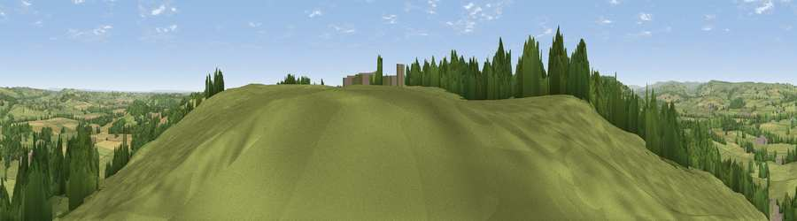

Viewpoint near Arthington
#14168 in England · top 15% of its area beats it · near ArthingtonWhere it is
The exact computed spot (SE 27225 43675). Click the marker for map links.
The view, rendered

A 360° render of this exact spot computed from the terrain model, tree cover and land cover — summer colours, afternoon light, calibrated against photographs of famous viewpoints. Real trees, hedges and buildings will differ in detail.
The panorama
Grey silhouette: terrain skyline in each direction (720 bearings, Earth curvature and refraction included). Dashed green: skyline with trees (+15 m) and buildings (+8 m) as obstacles. Blue strip: how far the ground is visible on each bearing.
Where the view opens
Wedge length = distance to the farthest visible ground on that bearing (vegetation-aware). Rings at 10, 25 and 50 km.
What fills the view
73% grassland · 17% woodland · 8% cropland · 2% built-up
Angular shares of the visible panorama (visual magnitude), not map area. Landscape diversity 0.36 (0–1 Shannon).
Key numbers
More beautiful places nearby
The staircase of upgrades: each row has a higher view potential than everything closer. Driving times are estimates from straight-line distance, calibrated against real road routing — check an actual route before setting out.
| Place | Direction | Drive | Score |
|---|---|---|---|
| Viewpoint near Arthington | ESE · 1 km | ~2 min | 59.3 |
| The Bowshaws | ESE · 1 km | ~3 min | 59.6 |
| Viewpoint near North Rigton | N · 5 km | ~12 min | 66.6 |
| Rawdon Trig point | SW · 6 km | ~14 min | 69.6 |
| Rawdon Billing | SW · 7 km | ~14 min | 72.7 |
| Viewpoint near Otley | W · 7 km | ~15 min | 77.5 |
| Viewpoint near East Witton | NNW · 43 km | ~63 min | 77.8 |
| Hood Hill | NNE · 44 km | ~64 min | 79.6 |
53.88855, -1.58727 · source: screening · position refined by local search. Computed location — check access rights before visiting.